from sikuli import * import datetime import logging import shutil import reports_Compare #---------------------------------------------------# def setupLog(): #---------------------------------------------------# Settings.myLogFile = os.environ['USERPROFILE'] + '\desktop\Sikuli\Sikuli.log' logging.basicConfig(filename=Settings.myLogFile, level=logging.DEBUG, format='%(message)s', filemode='w') # Level = DEBUG, INFO, WARNING, ERROR, CRITICAL #---------------------------------------------------# def pressTAB(number): #---------------------------------------------------# if number != 0: for i in range(number): type(Key.TAB) #---------------------------------------------------# def pressSHIFTTAB(number): #---------------------------------------------------# if number != 0: for i in range(number): type(Key.TAB,KeyModifier.SHIFT) #---------------------------------------------------# def pressF6(number): #---------------------------------------------------# if number != 0: for i in range(number): type(Key.F6) #---------------------------------------------------# def pressSHIFTF6(number): #---------------------------------------------------# if number != 0: for i in range(number): type(Key.F6,KeyModifier.SHIFT) #---------------------------------------------------# def pressDOWN(number): #---------------------------------------------------# if number != 0: for i in range(number): type(Key.DOWN) #---------------------------------------------------# def pressUP(number): #---------------------------------------------------# if number != 0: for i in range(number): type(Key.UP) #---------------------------------------------------# def pressLEFT(number): #---------------------------------------------------# if number != 0: for i in range(number): type(Key.LEFT) #---------------------------------------------------# def pressRIGHT(number): #---------------------------------------------------# if number != 0: for i in range(number): type(Key.RIGHT) #---------------------------------------------------# def getFocus(): #---------------------------------------------------# if int(Settings.tsVersion) > 2013: logging.debug('--- getFocus') while not exists(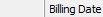): logging.debug('-- wait for bill date') time.sleep(1) click() #---------------------------------------------------# def waitForExportSuccess(): #---------------------------------------------------# if int(Settings.tsVersion) > 2014: wait(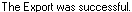, FOREVER) else: wait(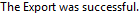, FOREVER) type(Key.ENTER) #---------------------------------------------------# def openClient(pClient): #---------------------------------------------------# logging.debug('- open client: ' + pClient) type("i",KeyModifier.CTRL) time.sleep(1) type(pClient) type(Key.ENTER) time.sleep(1) #---------------------------------------------------# def enterSlipFilter(pMonth,pExtraTab): #---------------------------------------------------# logging.debug('- enterSlipFilter: ' + str(pMonth) + ' ' + pExtraTab) wait(,60) time.sleep(1) click() time.sleep(1) click() wait(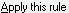,60) # choose TODAY to get to manual date entry logging.debug('-- choose TODAY') type(Key.DOWN) time.sleep(1) type(Key.ENTER) time.sleep(1) # type in dates logging.debug('-- enter date range') if pExtraTab == "yy": pressTAB(8) elif pExtraTab == "y": pressTAB(7) else: pressTAB(6) time.sleep(1) startDate = "1/1/" + Settings.dataYear type(startDate) type(Key.TAB) if pMonth > 12: endDate = "12/31/" + Settings.dataYear else: endDate = str(pMonth) + "/27/" + Settings.dataYear type(endDate) time.sleep(1) #---------------------------------------------------# def enterCurrentMonthOnList(pMonth): #---------------------------------------------------# # start from Print To field pressSHIFTTAB(3) if pMonth > 12: startDate = "12/1/" + Settings.dataYear else: startDate = str(pMonth) + "/1/" + Settings.dataYear type(startDate) type(Key.TAB) if pMonth > 12: endDate = "12/31/" + Settings.dataYear else: endDate = str(pMonth) + "/27/" + Settings.dataYear type(endDate) time.sleep(1) # get around defect where date doesn't expand pressSHIFTTAB(1) time.sleep(1) #---------------------------------------------------# def enterYearToDateOnList(pMonth): #---------------------------------------------------# # start from Print To field pressSHIFTTAB(3) startDate = "1/1/" + Settings.dataYear type(startDate) type(Key.TAB) if pMonth > 12: endDate = "12/31/" + Settings.dataYear else: endDate = str(pMonth) + "/27/" + Settings.dataYear type(endDate) time.sleep(1) # get around defect where date doesn't expand pressSHIFTTAB(1) time.sleep(1) #---------------------------------------------------# def waitForStatement(): #---------------------------------------------------# if exists('replace_it.png'): logging.debug('-- replace msg exists') type(Key.ENTER) time.sleep(1) wait(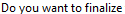,FOREVER) type("n") time.sleep(2) type(Key.ESC) #---------------------------------------------------# def waitForReport(): #---------------------------------------------------# logging.debug('- wait for report') time.sleep(1) if exists(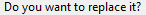): logging.debug('-- replace msg exists') type(Key.ENTER) time.sleep(1) if exists(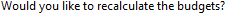): logging.debug('-- budget msg exists') type(Key.ENTER) time.sleep(5) #wait for "calculating" box to disappear while exists(Pattern().similar(0.90)): logging.debug('-- completed msg exists') time.sleep(3) time.sleep(2) #wait for "calculating" box to disappear while exists(Pattern(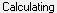).similar(0.90)): logging.debug('-- calculating msg exists') time.sleep(3) time.sleep(1) if exists(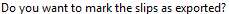): logging.debug('-- exported msg exists') type("n") time.sleep(1) getFocus() #---------------------------------------------------# def waitForWorksheet(): #---------------------------------------------------# logging.debug('- wait for worksheets') time.sleep(1) if exists(): logging.debug('-- replace msg exists') type(Key.ENTER) time.sleep(1) if exists(): logging.debug('-- budget msg exists') type(Key.ENTER) time.sleep(5) #wait for "printing" box to disappear while exists(): logging.debug('-- printing msg exists') time.sleep(3) time.sleep(1) #---------------------------------------------------# def finishReport(pReportName): #---------------------------------------------------# # fill in path and name; press ENTER type(Settings.repFolder + "\\" + pReportName) time.sleep(1) type(Key.ENTER) # wait for report to complete waitForReport() # compare the report with baseline reports_Compare.Compare_OneReport(pReportName) # close the report type(Key.F4,KeyModifier.CTRL) time.sleep(1) type("n") # do not save report time.sleep(1) if exists(): type(Key.F4,KeyModifier.CTRL) time.sleep(1) sectionEndTimeStamp() #---------------------------------------------------# def waitForTransList(): #---------------------------------------------------# time.sleep(2) while not exists(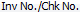): logging.debug('-- waiting for trans list') time.sleep(2) time.sleep(2) #---------------------------------------------------# def waitForTransEntry(): #---------------------------------------------------# time.sleep(2) while not exists(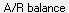): logging.debug('-- waiting for trans entry') time.sleep(2) time.sleep(2) #---------------------------------------------------# def waitForFundsList(): #---------------------------------------------------# time.sleep(2) while not exists(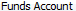): logging.debug('-- waiting for funds list') time.sleep(2) time.sleep(2) #---------------------------------------------------# def enterClient(pClientName): #---------------------------------------------------# time.sleep(1) type(pClientName) time.sleep(2) type(Key.TAB) time.sleep(2) #---------------------------------------------------# def checkForUnappliedAmount(): #---------------------------------------------------# time.sleep(4) if exists(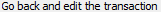): logging.debug("==> UNAPPLIED AMOUNT") type(Key.ENTER) #---------------------------------------------------# def waitForTransSave(): #---------------------------------------------------# while exists(Pattern().similar(0.90)): logging.debug('-- saving') time.sleep(2) #---------------------------------------------------# def startTSImport(): #---------------------------------------------------# logging.debug('- start TSImport') type("r",KeyModifier.KEY_WIN) time.sleep(1) type(Settings.tsimpEXE) type(Key.ENTER) time.sleep(2) wait(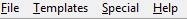,FOREVER) time.sleep(4) #---------------------------------------------------# def doNotSaveReport(): #---------------------------------------------------# time.sleep(1) if exists(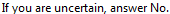): type("n") #---------------------------------------------------# def padZero(pNumber): #---------------------------------------------------# padNumber = str(pNumber) if pNumber < 10: padNumber = "0" + padNumber return(padNumber) #---------------------------------------------------# def bkuName(aMonth,aName,anExt): #---------------------------------------------------# fileName = padZero(aMonth) # prefix the version fileName = Settings.tsVersion + aName + fileName + anExt return(fileName) #---------------------------------------------------# def buildRepName(aName,anExt): #---------------------------------------------------# fileName = aName + "-" + Settings.PartOfRepName + anExt return(fileName) #---------------------------------------------------# def removeDateAndTime(): #---------------------------------------------------# logging.debug('-- remove date and time') time.sleep(1) click(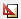) time.sleep(2) click(Pattern(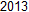).similar(0.50)) type(Key.DELETE) # delete date time.sleep(1) type(Key.DELETE) # delete time time.sleep(1) click(Pattern(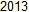).similar(0.50)) # delete date type(Key.DELETE) time.sleep(1) type(Key.DELETE) # delete time time.sleep(1) click(Pattern(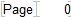).similar(0.55).targetOffset(20,0)) type(Key.DELETE) time.sleep(1) click(Pattern(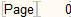).similar(0.55).targetOffset(20,0)) type(Key.DELETE) time.sleep(1) #---------------------------------------------------# def startTimeStamp(): #---------------------------------------------------# Settings.startTime = datetime.datetime.now() logging.debug(' ') logging.debug('---------------------------------------') logging.debug(Settings.startTime.strftime("Started at: %Y-%m-%d %H:%M:%S")) logging.debug('---------------------------------------') #---------------------------------------------------# def endTimeStamp(): #---------------------------------------------------# Settings.endTime = datetime.datetime.now() logging.debug(' ') logging.debug('---------------------------------------') logging.debug(Settings.endTime.strftime("Stopped at: %Y-%m-%d %H:%M:%S")) logging.debug('---------------------------------------') elapsedTime = Settings.endTime - Settings.startTime logging.debug("Elapsed: %s" %elapsedTime) #---------------------------------------------------# def sectionStartTimeStamp(aSectionName): #---------------------------------------------------# Settings.sectionName = aSectionName Settings.sectionStartTime = datetime.datetime.now() logging.debug(' ') logging.debug(' ') logging.debug('=======================================') logging.debug(Settings.sectionStartTime.strftime("Started at: %Y-%m-%d %H:%M:%S")) logging.debug('=======================================') #---------------------------------------------------# def sectionEndTimeStamp(): #---------------------------------------------------# Settings.sectionEndTime = datetime.datetime.now() logging.debug('---------------------------------------') logging.debug(Settings.sectionEndTime.strftime("Stopped at: %Y-%m-%d %H:%M:%S")) logging.debug('---------------------------------------') sectionElapsedTime = Settings.sectionEndTime - Settings.sectionStartTime totalMinutes = sectionElapsedTime.seconds / float(60) totalMinutes = int(totalMinutes * 100) / 100.0 logging.debug("Elapsed: %s" %totalMinutes) durationLog = open(Settings.durationFile, "a") durationLog.write(Settings.sectionName + "," + str(totalMinutes) + "\n") durationLog.close() #---------------------------------------------------# def pushReportLog(pReportName,pReportStatus): #---------------------------------------------------# reportTime = datetime.datetime.now() reportTime = reportTime.strftime("%Y-%m-%d %H:%M:%S") reportLogLine = reportTime + " " + pReportStatus + ": " + pReportName + "\n" reportLog = open(Settings.reportLogFile, "a") reportLog.write(reportLogLine) reportLog.close() #---------------------------------------------------# def getScreenshot(): #---------------------------------------------------# logging.debug(' ') logging.debug('Get screenshot') wholeScreen = getBounds() ssIn = capture(wholeScreen) logging.debug('- old path: ' + ssIn) ssTime = datetime.datetime.now() # add date to screenshot name ssOut = padZero(ssTime.year) + "-" + padZero(ssTime.month) + "-" + padZero(ssTime.day) # add time to screenshot name ssOut = ssOut + "-" + padZero(ssTime.hour) + padZero(ssTime.minute) + padZero(ssTime.second) # add extension to screenshot name ssOut = ssOut +# add path ssOut = Settings.sikFolder + "\\" + ssOut logging.debug('- new path: ' + ssOut) print(ssOut) shutil.move(ssIn,ssOut) #---------------------------------------------------# def testRestore(): #---------------------------------------------------# # using this to test AVs when i try to restore logging.debug(' ') logging.debug('test restore') type("f",KeyModifier.ALT) type("r") time.sleep(3) type(Key.ESC) #---------------------------------------------------# def checkProcesses(): #---------------------------------------------------# time.sleep(5) cmd = "wmic path Win32_PerfFormattedData_PerfProc_Process get Name,PrivateBytes" cmdOut = run(cmd) processList = cmdOut.splitlines() totalFbProcs = 0 for oneProcess in processList: oneProcess = oneProcess.strip() # print(oneProcess) if oneProcess[:7] == "fb_inet": totalFbProcs += 1 elif oneProcess[:8] == "Timeslip": procName, procSize = oneProcess.split() logging.debug(' ') logging.debug('>>> FB Procs: ' + str(totalFbProcs)) logging.debug('>>> TS Size : ' + str(procSize)) time.sleep(1)